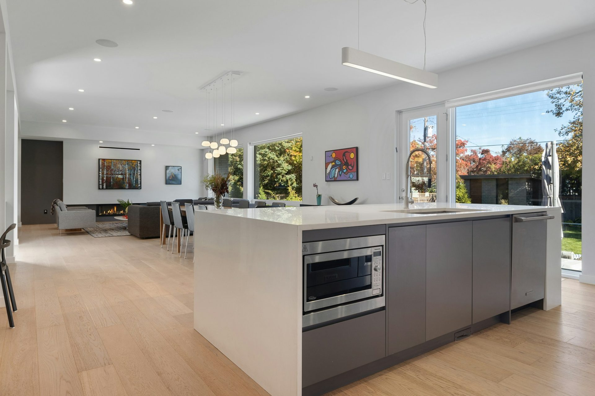
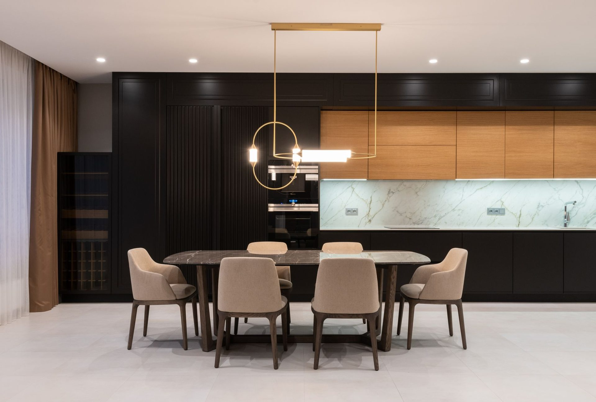

Four layouts,
and the room each suits.
Layout costs nothing to get right at drawing stage and a great deal to get wrong. It is the most valuable decision in the whole project.

The clearances that decide everything
Before the shapes, the numbers. Australian kitchens work to a bench height of about 900mm and a depth of 600mm, with overheads 600 to 750mm above the bench.
The one that matters most is aisle width. 1,000mm is the practical minimum between opposing runs, and 1,200mm is where a kitchen starts to feel generous and two people stop colliding. If a layout cannot give you 1,000mm, it is the wrong layout for that room regardless of how good it looks on a plan.
Galley
Two parallel runs. The most efficient layout that exists in terms of work per step, and the cheapest per metre of storage, which is why it dominates apartments, granny flats and tiny homes.
It needs that 1,000mm aisle and it does not tolerate through-traffic. If the galley is also the path to the back door, it will be a nuisance forever. Best in a room with one entrance.
L-shaped
Two runs meeting in a corner. The most common domestic layout in Australia, and for good reason — it opens to a dining space, keeps traffic out of the working zone, and adapts to almost any room.
Its weakness is the corner, which wastes roughly half a cabinet unless you address it. A blind-corner pull-out or a carousel turns that dead space into the most useful storage in the kitchen, and it is the fit-out option we recommend more than any other.
U-shaped
Three runs. The most storage and bench you can fit in a given footprint, and excellent for a serious cook because everything is within a step.
It needs width — you are managing two aisles, not one — and it can feel enclosed if the third run is solid to the ceiling. Two corners means two corner solutions, so budget for them.
If the room will not take a third run, the storage you wanted is often better found behind a door: whether a butler’s pantry is worth it walks through the clearances.
Island
Any of the above with a freestanding bench. What most people picture when they picture a new kitchen, and the layout that most often will not fit.
An island needs 1,000mm clear on every side you use, and 1,200mm where people sit. Add the island depth and you need roughly 3.6 metres of room width before an island is comfortable. Below that, a peninsula does the same social job without the pinch points. Islands also carry cost beyond the cabinetry — power, and often plumbing.
How to choose
Measure the room and apply the clearances first. That usually eliminates two of the four immediately, which is a far better starting point than a mood board.
Then ask how many people cook at once. One cook is well served by a galley or an L. Two need the wider aisles of a U or an island. Then ask where people stand when they are not cooking, because that is what an island really solves — it is a social answer more than a storage one.
Frequently asked
Common questions
If your question is not here, call the studio. We would rather talk it through than have you guess.
Ask us directly →What is the minimum space for a kitchen island?
Allow 1,000mm clear on every side you use and 1,200mm where people will sit. With a 900mm island that means roughly 3.6 metres of room width before it is comfortable. Below that a peninsula gives you the same social benefit without the pinch points.
Which kitchen layout is cheapest?
A galley, per metre of storage. Two straight runs, no corners to solve and no island to power or plumb. It is why galleys dominate granny flats, apartments and tiny homes — the layout is efficient before you have spent anything on finishes.
How wide should a kitchen aisle be?
1,000mm is the practical minimum between opposing runs. 1,200mm is where it stops feeling tight and two people can work without colliding. If a layout cannot give you 1,000mm, it is the wrong layout for that room.
What do I do about the corner in an L-shaped kitchen?
A blind-corner pull-out or a carousel. An unaddressed corner wastes roughly half a cabinet — you can reach the front of it and nothing else. It is the fit-out option we recommend most, because it creates storage you do not currently have rather than making existing storage easier to reach.

Put it to use
Reading is one thing.
Your room is another.
Send us your dimensions and we will tell you what actually works in your space — and what it costs. Free, fixed, and yours to keep either way.